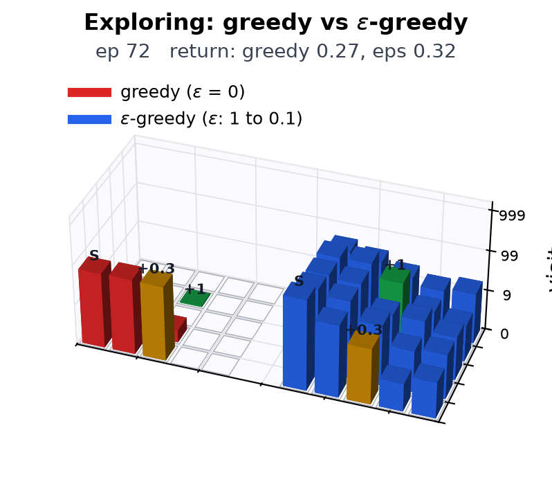
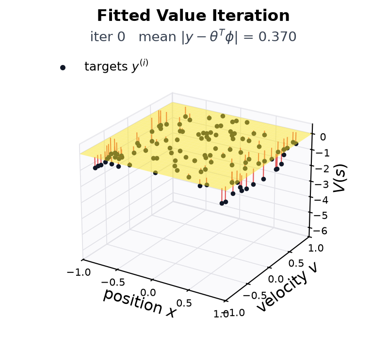
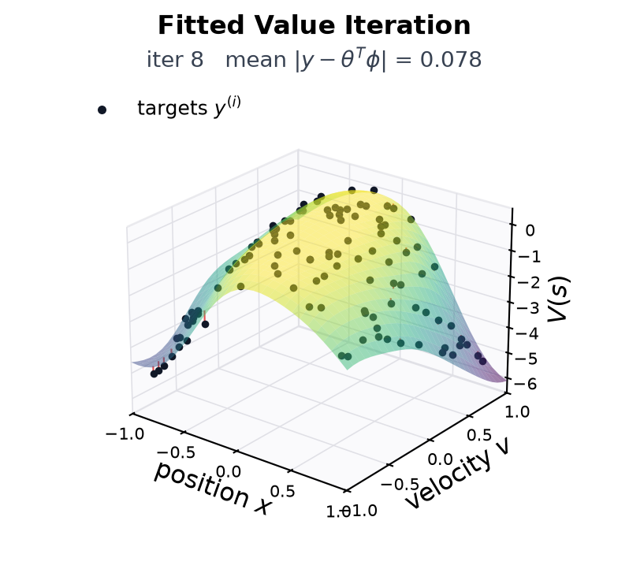
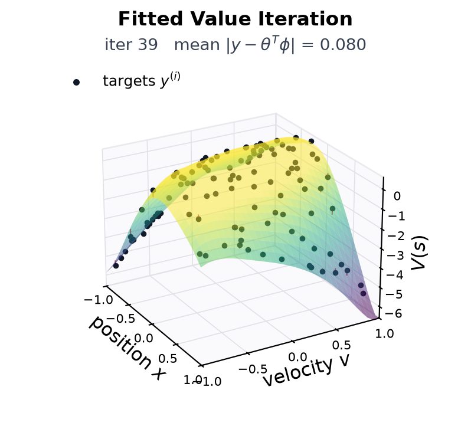
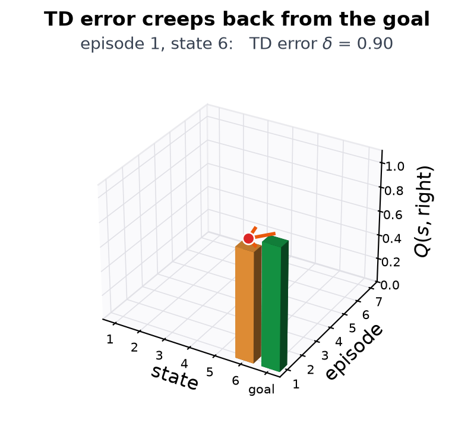
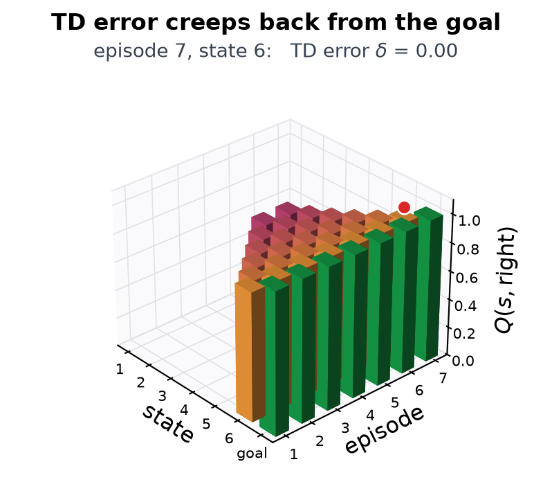
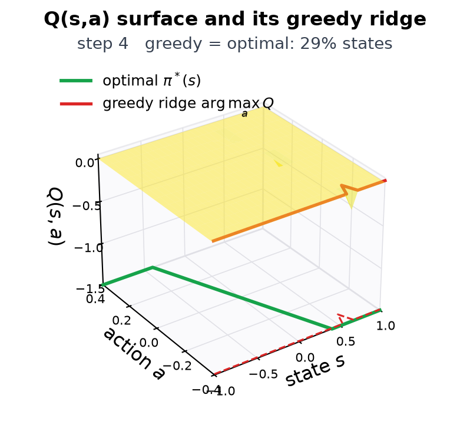
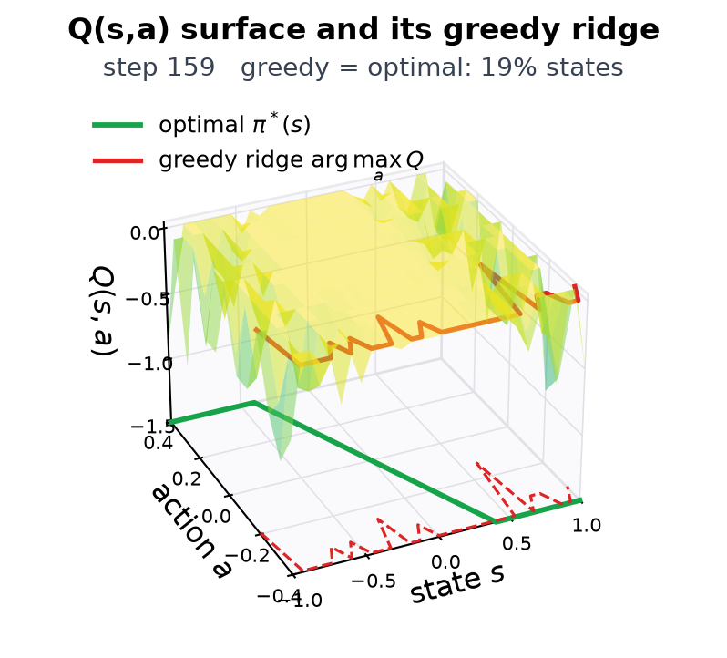
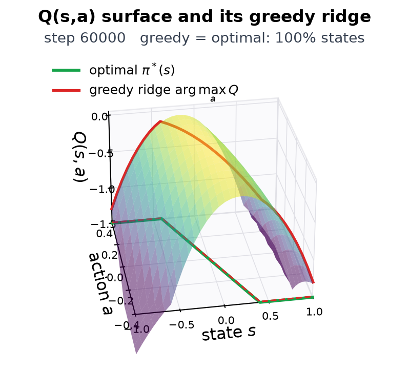
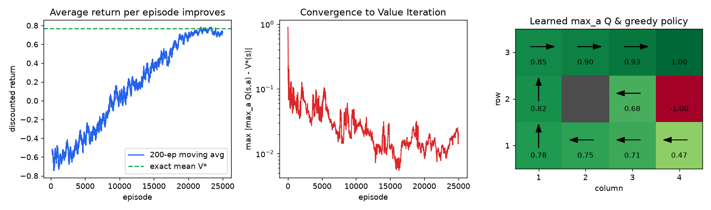

Q-Learning और Value Function Approximation
Theory
इस lecture में: Continuous state spaces में discretization क्यों नाकाम होता है (curse of dimensionality और generalization की कमी), Fitted Value Iteration (states sample करना, Bellman targets \(y^{(i)} = \max_a q(a)\) बनाना, और regression fit), action-value function \(Q^*(s, a)\), model-free Q-learning update और TD error, \(\epsilon\)-greedy exploration और off-policy learning, tabular Q-learning के convergence की शर्तें, function approximation \(Q(s, a; \theta)\), और Deep Q-Learning को स्थिर बनाने वाले दो विचार: Experience Replay तथा Target Network।
1. एक line में idea
पिछले lectures में हमने छोटे finite MDPs के लिए Value Iteration और Policy Iteration देखे, जहाँ हर state \(s\) की value एक table में रखी जाती थी और transition probabilities \(P_{sa}\) पता होती थीं (या अनुभव से गिन ली जाती थीं)। पर असली दुनिया में दो बड़ी रुकावटें आती हैं: पहला, state space अक्सर continuous या बहुत बड़ा होता है, इसलिए हर state के लिए अलग खाना बनाना असंभव है; दूसरा, अक्सर हमारे पास दुनिया का transition model \(P_{sa}\) या simulator भी नहीं होता।
इस lecture के दो मुख्य हथियार इन्हीं दोनों रुकावटों को तोड़ते हैं। पहला है Value Function Approximation (Fitted Value Iteration), जो table की जगह regression model \(V(s) = \theta^T \phi(s)\) से पूरे continuous space पर generalize करता है। दूसरा है Q-Learning, जो \(V^*(s)\) की जगह हर \((s, a)\) जोड़े की कीमत \(Q^*(s, a)\) सीखता है ताकि बिना \(P_{sa}\) जाने, सिर्फ़ दुनिया में चलकर सीधे optimal actions सीखे जा सकें।
2. Discretization क्यों नाकाम होता है?
मान लीजिए आप एक कार, inverted pendulum, या autonomous helicopter का controller सीखना चाहते हैं। इनका state \(s\) अलग-अलग खानों के बजाय \(\mathbb{R}^d\) का एक continuous vector होता है:
- Inverted pendulum (cart-pole): गाड़ी की जगह \(x\), रफ़्तार \(\dot{x}\), डंडे का कोण \(\theta\), और कोणीय रफ़्तार \(\dot{\theta}\), यानी \(s \in \mathbb{R}^4\)।
- 2D कार या ज़मीनी robot: \((x, y, \theta, \dot{x}, \dot{y}, \dot{\theta}) \in \mathbb{R}^6\)।
- Autonomous helicopter: 3D जगह \((x, y, z)\), तीन orientation कोण (roll, pitch, yaw), और इन छहों के वेग, यानी \(s \in \mathbb{R}^{12}\)।
Continuous space पर पुराना tabular Value Iteration चलाने का सबसे सीधा ख्याल discretization है: हर coordinate को \(k\) बराबर हिस्सों (bins) में काट दें और बने हुए खानों को एक finite MDP मान लें। छोटे \(d = 1\) या \(d = 2\) पर यह चल जाता है, पर जैसे ही आयाम \(d\) बढ़ते हैं, यह तरीका दो बड़ी वजहों से टूट जाता है:
- Curse of dimensionality: अगर \(d\) dimensions में से हरेक को सिर्फ़ \(k\) bins में बाँटें, तो कुल discrete states की संख्या \(|S| = k^d\) हो जाती है, जो \(d\) के साथ exponential रफ़्तार से विस्फोट करती है। Helicopter (\(d = 12\)) में हर coordinate पर मामूली \(k = 20\) bins रखने पर भी \(20^{12} \approx 4.1 \times 10^{15}\) states बनते हैं। इतने states की table न किसी computer की memory में आ सकती है, न उन पर एक भी sweep चलाया जा सकता है।
- Smoothness और generalization की कमी: Discretization मान लेता है कि एक खाने के अंदर हर बिंदु पर \(V^*(s)\) बिल्कुल सपाट (piecewise constant) है और खाने की सीमा पार करते ही सीढ़ी की तरह बदल जाता है। इससे भी बड़ी दिक्कत यह है कि एक bin के अनुभव से पड़ोसी bin को कुछ पता नहीं चलता। अगर agent ने किसी state \(s\) पर अच्छा या बुरा परिणाम देखा, तो उसके बिल्कुल पास के state \(s + \delta\) के बगल वाले खाने में जाने पर भी उसे शून्य से सीखना पड़ता है।
Supervised learning में जब input \(x \in \mathbb{R}^d\) continuous होता था, तब हमने \(\mathbb{R}^d\) को bins में नहीं काटा था, बल्कि \(y \approx \theta^T \phi(x)\) जैसा smooth function fit किया था। ठीक वही विचार अब हम value function पर लगाएँगे।
3. Fitted Value Iteration (FVI)
मान लीजिए state space \(S = \mathbb{R}^d\) continuous है, पर action space \(A\) अभी छोटा और finite है (\(|A|\) कम है, जैसे बाएँ, सीधा, दाएँ)। साथ ही मान लीजिए हमारे पास MDP का एक simulator (generative model) है: आप कोई भी state \(s\) और action \(a\) अंदर दें, तो simulator एक अगला random state \(s' \sim P_{sa}\) खींचकर लौटा देता है।
हम optimal value function \(V^*(s)\) को features \(\phi : S \to \mathbb{R}^p\) के linear संयोजन से approximate करना चाहते हैं:
\[V(s) = \theta^T \phi(s)\]
यहाँ \(\phi(s)\) आप खुद चुन सकते हैं, जैसे polynomial features या state space में फैले Gaussian RBF bumps। (Linear model की जगह neural network या कोई भी दूसरा regression algorithm भी रखा जा सकता है।)
याद करें कि finite MDP में exact Value Iteration हर state पर यह Bellman backup करता था:
\[V(s) := R(s) + \gamma \max_{a \in A} E_{s' \sim P_{sa}}\!\left[ V(s') \right]\]
Continuous \(S\) में दो मुश्किलें हैं: पहला, अनंत states पर loop नहीं चला सकते; दूसरा, \(E_{s' \sim P_{sa}}[V(s')]\) अब जोड़ नहीं बल्कि integral \(\int P_{sa}(s') V(s')\, ds'\) है। Fitted Value Iteration दोनों मुश्किलों को sampling और supervised regression से हल करता है:
- अनंत states की जगह \(m\) प्रतिनिधि states \(\{s^{(1)}, s^{(2)}, \dots, s^{(m)}\}\) sample कर लें।
- हर \(s^{(i)}\) और हर action \(a \in A\) के लिए simulator से \(k\) अगले states खींचकर expectation का sample औसत \(q(a)\) निकालें, और सबसे बड़े action का मान \(y^{(i)} = \max_a q(a)\) को target label बना लें।
- अब \(\{(s^{(i)}, y^{(i)})\}_{i=1}^{m}\) पर साधारण linear regression चलाकर नया \(\theta\) निकाल लें ताकि \(\theta^T \phi(s^{(i)}) \approx y^{(i)}\)।
Algorithm: Fitted Value Iteration (Step by Step)
- Random रूप से (या किसी शुरुआती policy को चलाकर) \(m\) states \(\{s^{(1)}, s^{(2)}, \dots, s^{(m)}\} \subset S\) चुनें। \(\theta := 0\) से शुरू करें।
- जब तक \(\theta\) लगभग स्थिर न हो जाए, ये कदम दोहराएँ:
- हर \(i = 1, \dots, m\) के लिए:
- हर action \(a \in A\) के लिए simulator से \(k\) बार sample करें: \(s'_1, s'_2, \dots, s'_k \sim P_{s^{(i)} a}\) (यदि simulator deterministic हो, यानी \(s' = f(s, a)\), तो \(k = 1\) ही पर्याप्त है)।
- Action \(a\) की अनुमानित कीमत निकालें:
\[q(a) = \frac{1}{k} \sum_{j=1}^{k} \left( R(s^{(i)}) + \gamma\, V(s'_j) \right) = R(s^{(i)}) + \gamma \cdot \frac{1}{k} \sum_{j=1}^{k} \theta^T \phi(s'_j)\]
- Bellman target तय करें:
\[y^{(i)} = \max_{a \in A} q(a)\]
- अब supervised regression से नया \(\theta\) fit करें (जरूरत हो तो regularization जोड़ सकते हैं):
\[\theta := \arg\min_{\theta} \frac{1}{2} \sum_{i=1}^{m} \left( \theta^T \phi(s^{(i)}) - y^{(i)} \right)^2\]
सीखे हुए \(V\) से action कैसे चुनें? जब असली दुनिया में agent किसी state \(s\) में खड़ा हो, तो वह \(\arg\max_a E_{s' \sim P_{sa}}[R(s) + \gamma V(s')]\) चुनता है, जिसे फिर से हर \(a \in A\) के लिए simulator में \(k\) छोटे rollouts चलाकर निकाला जाता है।
ध्यान दें कि यहाँ एक बड़ी शर्त छुपी है: निर्णय लेते समय भी आपको simulator या \(P_{sa}\) चाहिए! अगर आपके पास कोई simulator ही न हो और robot को सीधे असली दुनिया में चलकर सीखना और फ़ैसला लेना हो, तो अकेला \(V(s)\) यह नहीं बता सकता कि कौन-सा action आपको अच्छे \(s'\) में ले जाएगा। इसी कमी को दूर करने के लिए हम \(V^*\) से \(Q^*\) पर आते हैं।
4. Action-Value Function \(Q^*(s, a)\)
अभी तक reward को हमने \(R(s)\) लिखा था; सामान्य रूप में reward state और action दोनों पर निर्भर हो सकता है, जिसे \(R(s, a)\) लिखते हैं (Lecture 16 के gridworld में बस हर \(a\) के लिए \(R(s, a) = R(s)\) है)। किसी policy \(\pi\) के लिए action-value function \(Q^\pi(s, a)\) इस सवाल का जवाब है: यदि आप state \(s\) से शुरू करें, पहला कदम मजबूरन action \(a\) लें, और उसके बाद हमेशा policy \(\pi\) पर चलें, तो कुल expected discounted return कितना होगा?
\[Q^\pi(s, a) = R(s, a) + \gamma \sum_{s' \in S} P_{sa}(s')\, V^\pi(s')\]
सारी policies पर अधिकतम लेने से optimal action-value function \(Q^*(s, a) = \max_\pi Q^\pi(s, a)\) मिलता है:
\[Q^*(s, a) = R(s, a) + \gamma \sum_{s' \in S} P_{sa}(s')\, V^*(s')\]
\(Q^*\) और \(V^*\), \(\pi^*\) के बीच का रिश्ता बेहद साफ़ और सीधा है:
\[V^*(s) = \max_{a \in A} Q^*(s, a), \qquad \pi^*(s) = \arg\max_{a \in A} Q^*(s, a)\]
ऊपर की \(Q^*\) वाली समीकरण में \(V^*(s')\) की जगह \(\max_{a' \in A} Q^*(s', a')\) रख दें, तो \(Q^*\) की Bellman optimality equation मिल जाती है:
\[Q^*(s, a) = R(s, a) + \gamma \sum_{s' \in S} P_{sa}(s') \max_{a' \in A} Q^*(s', a')\]
\(\pi^*(s) = \arg\max_{a \in A} Q^*(s, a)\) वाले सूत्र की ताकत देखिए! अगर किसी तरह आपने \(Q^*(s, a)\) सीख लिया, तो state \(s\) में सबसे अच्छा action चुनने के लिए आपको न \(P_{sa}\) चाहिए, न एक कदम आगे का simulator। हर action की कीमत सीधे \(Q^*(s, a)\) में लिखी हुई है; बस उनमें सबसे बड़ा चुन लें।
5. Model-Free Q-Learning और TD Error
अब असली model-free परिस्थिति लें: agent को न \(P_{sa}\) पता है, न \(R(s, a)\) की तालिका। वह बस दुनिया में मौजूद है। समय \(t\) पर वह किसी state \(s\) में होता है, कोई action \(a\) चुनता है, और दुनिया उसे तुरंत का reward \(r\) और नया state \(s'\) दे देती है। इस एक कदम के अनुभव को transition tuple \((s, a, r, s')\) कहते हैं।
\(Q^*\) की Bellman equation कहती है कि सही \(Q^*\) पर \(Q^*(s, a) = E_{s' \sim P_{sa}}\!\left[ r + \gamma \max_{a' \in A} Q^*(s', a') \right]\) होना चाहिए। हमारे पास पूरा expectation तो नहीं है, पर दुनिया से अभी-अभी आया \(s'\) ठीक \(P_{sa}\) से निकला हुआ एक सच्चा sample है! इसलिए अपने मौजूदा अनुमान \(Q\) की मदद से हम दाएँ हिस्से का एक single-sample निशाना (TD target) बना सकते हैं:
\[y = \begin{cases} r & \text{यदि } s \text{ पर खेल खत्म हो रहा हो} \\ r + \gamma \max_{a' \in A} Q(s', a') & \text{सामान्य कदम पर} \end{cases}\]
(Lecture 16 के 4x3 gridworld convention में यदि आप हर terminal state \(s_{\text{term}}\) के लिए \(Q(s_{\text{term}}, \cdot) = R(s_{\text{term}})\) रख दें और वहाँ पहुँचते ही episode रोक दें, तो सामान्य सूत्र \(r + \gamma \max_{a'} Q(s', a')\) अपने आप terminal reward \(+1\) या \(-1\) को सही जगह जोड़ देता है।)
इस नए निशाने और हमारे पुराने अनुमान \(Q(s, a)\) के अंतर को Temporal Difference (TD) error कहते हैं:
\[\delta = r + \gamma \max_{a' \in A} Q(s', a') - Q(s, a)\]
इसे "temporal difference" इसलिए कहते हैं क्योंकि यह दो अलग-अलग समय के अनुमानों (अभी के \(Q(s, a)\) और एक कदम बाद के \(r + \gamma \max_{a'} Q(s', a')\)) का अंतर है। Learning rate \(\alpha \in (0, 1]\) के साथ \(Q(s, a)\) को इस निशाने की ओर थोड़ा खिसकाने से Q-learning update (Watkins, 1989) मिलता है:
\[Q(s, a) := Q(s, a) + \alpha\, \delta = (1 - \alpha)\, Q(s, a) + \alpha \left( r + \gamma \max_{a' \in A} Q(s', a') \right)\]
दूसरे रूप से साफ़ दिखता है कि यह पुराने अनुमान और नए sample target का एक exponentially weighted running average है। जब यह update हज़ारों कदमों पर बार-बार चलता है, तो \(s'\) का शोर अपने आप औसत होकर \(\sum_{s'} P_{sa}(s')\) वाले expectation में बदल जाता है, बिना कभी \(P_{sa}\) को गिने या रखे! साथ ही यह bootstrapping करता है: Monte Carlo की तरह episode खत्म होने का इंतज़ार करने के बजाय हर एक कदम के तुरंत बाद सीखना हो जाता है।
6. Exploration, \(\epsilon\)-Greedy, और Off-Policy Learning
Q-learning में हमने यह तो तय कर लिया कि \((s, a, r, s')\) मिलने के बाद table कैसे सुधारें, पर दुनिया में चलते समय agent कौन-सा action \(a\) चुने?
अगर agent शुरू से ही हमेशा greedy action \(a = \arg\max_{a'} Q(s, a')\) चुनता रहे (exploitation), तो मुसीबत आ जाती है। मान लीजिए पास में एक छोटा \(+0.3\) का इनाम है और थोड़ा दूर \(+1.0\) का बड़ा इनाम। शुरू में \(Q = 0\) है; जैसे ही agent को संयोग से \(+0.3\) वाला रास्ता एक बार मिल गया, उन खानों का \(Q\) धनात्मक हो जाएगा और pure greedy agent ज़िंदगी भर उसी छोटे रास्ते को दोहराता रहेगा, बाकी दुनिया कभी देखेगा ही नहीं।
इसलिए हमें exploration (नए actions आज़माना) और exploitation (अब तक की जानकारी का फ़ायदा उठाना) में संतुलन चाहिए। इसका सबसे प्रचलित तरीका \(\epsilon\)-greedy exploration है (\(\epsilon \in (0, 1]\)):
\[a = \begin{cases} \arg\max_{a' \in A} Q(s, a') & \text{probability } 1 - \epsilon \text{ के साथ (exploit)} \\ \text{uniformly random } a' \in A & \text{probability } \epsilon \text{ के साथ (explore)} \end{cases}\]
व्यवहार में सीखने की शुरुआत में \(\epsilon\) बड़ा (जैसे \(\epsilon = 1.0\)) रखते हैं ताकि agent पूरे state space में घूमे, और episodes बढ़ने के साथ \(\epsilon\) को धीरे-धीरे छोटा (जैसे \(0.1\) या \(0.01\)) करते जाते हैं।
Q-Learning एक Off-Policy Algorithm क्यों है?
RL में दो नीतियों में फ़र्क समझना बहुत ज़रूरी है:
| नीति | काम | Q-Learning में यह क्या है? |
|---|---|---|
| Behaviour policy | दुनिया में चलकर अनुभव \((s, a, r, s')\) इकट्ठा करने वाली नीति | जैसे \(\epsilon\)-greedy (या पूरी तरह random नीति भी) |
| Target policy | वह नीति जिसकी असली value हम सीख रहे हैं | शुद्ध greedy नीति \(\pi(s) = \arg\max_{a'} Q(s, a')\) |
जब behaviour policy और target policy अलग-अलग हो सकती हों, तो algorithm को off-policy कहते हैं। Q-learning के update में ध्यान से देखिए: \(s'\) पर पहुँचने के बाद agent अगली चाल में चाहे \(\epsilon\) के कारण कोई भटका हुआ random कदम ही क्यों न ले ले, update का target हमेशा \(\max_{a'} Q(s', a')\) होता है। यानी गड्ढे के किनारे खड़े होने की value निकालते समय Q-learning यह मानकर चलता है कि आगे हम सबसे समझदारी भरा कदम ही उठाएँगे, न कि \(\epsilon\) वाली छलाँग। (इसके उलट SARSA नाम का on-policy तरीका \(\max_{a'}\) की जगह सचमुच लिए गए अगले action \(Q(s', a')\) से update करता है, इसलिए वह अपनी खुद की \(\epsilon\)-फिसलन से डरकर गड्ढे से और दूर रहता है।)
Off-policy होने का एक जबरदस्त फ़ायदा यह भी है कि Q-learning किसी पुरानी नीति, इंसान के खेल, या पहले से जमा किए गए transitions से भी \(Q^*\) सीख सकता है।
Tabular Q-Learning के Convergence की शर्तें
एक finite MDP में जहाँ हर \((s, a)\) की अलग table entry है और rewards सीमित हैं, tabular Q-learning probability 1 के साथ ठीक \(Q^*\) पर converge करता है (\(Q_t(s, a) \to Q^*(s, a)\)), बशर्ते ये दो शर्तें पूरी हों:
- पर्याप्त exploration: अनंत समय में हर \((s, a)\) जोड़े को अनंत बार visit किया जाए (जैसे \(\epsilon_t > 0\) इतना बना रहे कि कोई कोना छूटे नहीं)।
- Robbins-Monro step-size शर्तें: यदि किसी जोड़े \((s, a)\) के \(k\)-वें update पर इस्तेमाल किया गया learning rate \(\alpha_k(s, a)\) हो, तो हर \((s, a)\) के लिए:
\[\sum_{k=1}^{\infty} \alpha_k(s, a) = \infty, \qquad \sum_{k=1}^{\infty} \alpha_k(s, a)^2 < \infty\]
इन दोनों शर्तों का सहज मतलब बिल्कुल वैसा ही है जैसा stochastic approximation में होता है। पहली शर्त (\(\sum \alpha_k = \infty\)) पक्का करती है कि कदम इतने तेज़ी से छोटे न पड़ जाएँ कि हम शुरुआती गलत मान से कभी लक्ष्य तक पहुँच ही न सकें। दूसरी शर्त (\(\sum \alpha_k^2 < \infty\)) पक्का करती है कि अलग-अलग random transitions \(s' \sim P_{sa}\) से आने वाले उतार-चढ़ाव अंत में शांत हो जाएँ। उदाहरण के लिए, यदि \(N(s, a)\) उस जोड़े की अब तक की visit संख्या है, तो \(\alpha = \frac{1}{N(s, a)}\) या \(\alpha = N(s, a)^{-0.7}\) दोनों शर्तें पूरी करते हैं। अगर आप हमेशा स्थिर \(\alpha\) (जैसे \(\alpha = 0.1\)) रखें, तो दूसरी शर्त पूरी नहीं होती; तब \(Q\) जल्दी अच्छे इलाके में पहुँच तो जाता है, पर अंत में \(Q^*\) के इर्द-गिर्द हल्का हिलता रहता है।
Algorithm: Tabular Q-Learning (\(\epsilon\)-Greedy के साथ)
- सारे \((s, a)\) के लिए \(Q(s, a) := 0\) रखें (या यदि terminal states के स्थिर मान तय हैं, तो \(Q(s_{\text{term}}, \cdot) := R(s_{\text{term}})\) रखें)।
- हर episode के लिए:
- शुरुआती state \(s\) से चलें।
- जब तक \(s\) terminal न हो, दोहराएँ:
- \(\epsilon\)-greedy नियम से \(Q(s, \cdot)\) देखकर action \(a\) चुनें।
- दुनिया में \(a\) चलाएँ; तुरंत का reward \(r\) और अगला state \(s'\) देखें।
- TD error निकालें: \(\delta = r + \gamma \max_{a' \in A} Q(s', a') - Q(s, a)\)।
- Table सुधारें: \(Q(s, a) := Q(s, a) + \alpha\, \delta\), और \(s := s'\) कर दें।
7. Function Approximation \(Q(s, a; \theta)\), Experience Replay और Target Network
अब इस lecture के दोनों हिस्सों को जोड़िए: जब state space भी विशाल या continuous हो (जैसे robot के continuous angles या video game के raw pixels) और हमारे पास \(P_{sa}\) या simulator भी न हो, तब क्या करें? तब हम \(Q\)-table की जगह एक parameterized function \(Q(s, a; \theta)\) रखते हैं, जैसे linear model \(Q(s, a; \theta) = \theta^T \phi(s, a)\) या एक deep neural network (Deep Q-Network, DQN)।
मान लीजिए एक कदम \((s, a, r, s')\) मिला। यदि हम TD target \(y = r + \gamma \max_{a' \in A} Q(s', a'; \theta)\) को एक पल के लिए स्थिर संख्या (fixed label) मान लें, तो एक बिंदु के squared loss \(L(\theta) = \frac{1}{2}\left( Q(s, a; \theta) - y \right)^2\) पर stochastic gradient descent का कदम यह बनता है:
\[\theta := \theta + \alpha \left( r + \gamma \max_{a' \in A} Q(s', a'; \theta) - Q(s, a; \theta) \right) \nabla_\theta Q(s, a; \theta)\]
इसे semi-gradient Q-learning कहते हैं, क्योंकि \(y\) के अंदर भी \(\theta\) बैठा है पर हम \(y\) को रोककर सिर्फ़ prediction \(Q(s, a; \theta)\) का gradient लेते हैं। ध्यान दें कि tabular case इसका एक खास रूप है जहाँ हर \((s, a)\) का अपना अलग indicator feature होता है।
अस्थिरता और DQN के दो बड़े उपाय
Tabular Q-learning की पक्की convergence गारंटी सामान्य function approximation पर लागू नहीं होती। असल में function approximation, bootstrapping (खुद के अनुमान से target बनाना), और off-policy learning, ये तीनों साथ हों (जिन्हें RL में अक्सर deadly triad कहा जाता है) तो parameters \(\theta\) कभी-कभी भटककर अनंत की ओर diverge भी कर सकते हैं। जब neural network जैसा लचीला model सीधे online कदमों पर चलाया जाता है, तो दो व्यावहारिक दिक्कतें तुरंत सामने आती हैं:
- लगातार आने वाले कदम \((s_t, a_t, r_t, s_{t+1})\) और \((s_{t+1}, a_{t+1}, r_{t+1}, s_{t+2})\) आपस में बहुत ज़्यादा correlated होते हैं, जबकि SGD यह मानता है कि samples लगभग i.i.d. हों। एक ही इलाके के सैकड़ों कदम लगातार देखने से network बाक़ी दुनिया को भूलने लगता है।
- जैसे ही एक कदम में \(\theta\) थोड़ा बदलता है, ठीक उसी पल हमारा निशाना \(y = r + \gamma \max_{a'} Q(s', a'; \theta)\) भी बदल जाता है। अपने ही भागते हुए निशाने का पीछा करने से खतरनाक feedback oscillations पैदा होते हैं।
Deep Q-Learning (Mnih et al., 2015) दो सरल पर बेहद असरदार उपायों से इस सीखने को स्थिर बनाता है:
- Experience Replay: हर नए अनुभव \((s_t, a_t, r_t, s_{t+1})\) को एक बार इस्तेमाल करके फेंकने के बजाय एक बड़े memory buffer \(\mathcal{D}\) (replay buffer) में सहेजते जाते हैं। हर training step पर \(\mathcal{D}\) में से random रूप से एक mini-batch खींचकर \(\theta\) को update किया जाता है। इससे समय के साथ जुड़ा correlation टूट जाता है और पुराने अनुभव कई बार काम आकर sample efficiency बहुत बढ़ा देते हैं।
- Target Network: Target \(y\) निकालने के लिए मुख्य network \(\theta\) की एक अलग, धीमे बदलने वाली कॉपी \(\theta^-\) (target network) रखी जाती है:
\[y = r + \gamma \max_{a' \in A} Q(s', a'; \theta^-)\]
मुख्य parameters \(\theta\) हर कदम पर SGD से सुधरते हैं, जबकि \(\theta^-\) को कई कदमों तक स्थिर रखा जाता है (हर \(C\) कदमों बाद \(\theta^- \leftarrow \theta\) से कॉपी किया जाता है, या छोटे \(\tau \ll 1\) के साथ \(\theta^- \leftarrow \tau \theta + (1 - \tau)\theta^-\) से धीरे-धीरे खिसकाया जाता है)। इससे कुछ समय के लिए regression का निशाना स्थिर हो जाता है और runaway divergence रुक जाता है।
8. Practical बातें और आम गलतियाँ
- Terminal state पर भविष्य की value जोड़ देना: यदि खेल \(s'\) पर खत्म हो चुका है और आगे कोई कदम ही नहीं है, तो उसके बाद का भविष्य शून्य है (या Lecture 16 की तरह यदि terminal state का मान ही उसका अंतिम इनाम है, तो वहाँ से आगे \(\gamma\) वाला कोई और कदम न जोड़ें)। यह bug अक्सर सारे \(Q\) मानों को \(\frac{1}{1-\gamma}\) गुना फुला देता है।
- \(\epsilon\) को बहुत जल्दी शून्य कर देना: यदि agent ने पूरा grid या state space देखे बिना ही \(\epsilon \approx 0\) कर दिया, तो वह पहले मिले औसत दर्जे के रास्ते पर हमेशा के लिए अटक जाएगा। \(\epsilon\) को धीरे-धीरे घटाएँ और सीखने के दौरान एक छोटा न्यूनतम मान (जैसे \(0.05\) या \(0.1\)) बनाए रखें।
- Ties को हमेशा एक ही दिशा में तोड़ना: शुरू में जब सारे \(Q(s, a) = 0\) हों, तब
argmaxहमेशा पहला action (a = 0) लौटाता है, जिससे शुरुआती exploration एक ही दीवार में सिर मारता रहता है। बराबर मान होने पर random रूप से tie तोड़ना बेहतर है, या शुरू में \(\epsilon = 1\) रखें। - Continuous actions में \(\max_a Q(s, a)\) की कठिनाई: FVI और Q-learning दोनों में हर कदम पर \(\max_{a \in A}\) निकालना पड़ता है। जब actions कम और discrete हों तो यह एक छोटी सूची में सबसे बड़ा ढूँढना है, पर जब action खुद high-dimensional और continuous हो तो हर कदम पर अंदर एक कठिन optimization चलाना पड़ता है। ऐसे में अगला lecture (Policy Search) ज़्यादा स्वाभाविक रास्ता देगा।
- Overestimation bias: क्योंकि \(y\) में शोर-भरे अनुमानों पर \(\max_{a'}\) लगा है, और \(E[\max_a \hat{Q}(a)] \ge \max_a E[\hat{Q}(a)]\), साधारण Q-learning अक्सर सच्ची कीमतों को थोड़ा बढ़ा-चढ़ाकर आँकता है (जिसे Double Q-learning सुधारता है)।
9. खुद से पूछें
- मान लीजिए किसी continuous MDP का transition model \(P_{sa}\) आपको बिल्कुल नहीं पता और आपके पास कोई simulator भी नहीं है, सिर्फ़ असली robot को चलाकर अनुभव मिलते हैं। क्या आप अकेले \(V^*(s)\) को सीखकर optimal action चुन सकते हैं, या आपको \(Q^*(s, a)\) की ज़रूरत पड़ेगी, और क्यों?
- एक चट्टान के किनारे से गुज़रने वाले रास्ते में \(\epsilon\)-greedy (\(\epsilon = 0.1\)) व्यवहार से चलते हुए भी Q-learning किनारे के ठीक बगल से जाने वाली risky पर सबसे छोटी optimal policy क्यों सीख लेता है? इसका off-policy होने से क्या संबंध है?
- Function approximation \(Q(s, a; \theta)\) में यदि हम replay buffer हटा दें और target में भी तुरंत बदलने वाला वही \(\theta\) इस्तेमाल करें, तो लगातार आने वाले correlated कदमों से सीखना क्यों बिगड़ सकता है?
3D Animations


क्या देखें: फ़र्श पर Lecture 16 वाला 4x3 gridworld है और हर state पर bar की ऊँचाई \(\max_a Q(s,a)\) है। काले चौकोर frames value iteration से निकला सही जवाब \(V^*(s)\) दिखाते हैं, bars के ऊपर के तीर greedy action \(\arg\max_a Q(s,a)\) हैं, और स्लेटी पट्टी दीवार है। शुरू में सिर्फ़ terminal states (हरा \(+1\), लाल \(-1\)) की value पता है। जैसे-जैसे episodes चलते हैं, value goal से पीछे की ओर फैलती है: पहले goal के पड़ोसी भरते हैं, फिर उनके पड़ोसी। अंत में हर bar अपने frame को छू लेता है, यानी बिना \(P_{sa}\) जाने Q-learning वहीं पहुँच गया जहाँ value iteration पहुँचता है।



क्या देखें: दो एक जैसे 5x5 grids हैं: बायाँ (लाल) हमेशा greedy action लेता है, दायाँ (नीला) \(\epsilon\)-greedy है जिसमें \(\epsilon\) धीरे-धीरे \(1\) से \(0.1\) तक घटता है। दोनों कोने S से चलते हैं। पास में छोटा reward \(+0.3\) है और थोड़ा दूर बड़ा reward \(+1\)। Bar की ऊँचाई बताती है कि agent उस cell में कितनी बार गया (log scale)। Greedy agent को जैसे ही छोटा reward मिलता है, वह उसी पतले रास्ते पर अटक जाता है और बाकी grid कभी नहीं देखता। \(\epsilon\)-greedy agent के visits पूरे grid पर फैलते हैं, उसे \(+1\) मिल जाता है, और उसका average return greedy से काफ़ी ऊपर निकल जाता है। यही exploration की कीमत और फ़ायदा है।



क्या देखें: फ़र्श पर एक continuous state space है: एक गाड़ी की position \(x\) और velocity \(v\), और reward \(R(s) = -x^2\) है। काले बिंदु sampled states \(s^{(i)}\) पर निकाले गए targets \(y^{(i)} = \max_a \left[R(s^{(i)}) + \gamma E[V(s')]\right]\) हैं, और रंगीन surface fitted value function \(V(s) = \theta^T\phi(s)\) है। हर iteration में surface को regression से targets पर fit किया जाता है, फिर नई surface से नए targets बनते हैं जो थोड़ा और नीचे होते हैं (लाल रेखाएँ यही फ़ासला हैं)। देखिए कि surface सिर्फ़ \(x\) पर निर्भर नाली से शुरू होकर तिरछी हो जाती है: तेज़ी से दूर भागती state की value कम है। अंत में targets surface पर ही बैठ जाते हैं, यानी \(V\) अपने ही Bellman backup का fit बन गया।



क्या देखें: यह एक सीधा corridor है: 6 states और दाएँ सिरे पर goal (हरा, value \(1\))। Axes हैं: state, episode का नंबर, और ऊँचाई \(Q(s, \text{right})\)। लाल गेंद agent है जो हर episode में बाएँ से दाएँ चलता है, और हर कदम पर एक Q-learning update होता है (तस्वीर साफ़ रखने के लिए \(\alpha = 1\), \(\gamma = 0.9\))। पहले episode में TD error \(\delta\) सिर्फ़ goal के ठीक पहले वाली state पर nonzero है (नारंगी तीर), बाकी जगह \(0\)। दूसरे episode में उससे एक state पीछे, और इसी तरह। Value की जानकारी हर episode में सिर्फ़ एक कदम पीछे खिसकती है, इसलिए bars की सीढ़ी तिरछी बनती है। सातवें episode में हर जगह \(\delta = 0\) है: सीखना पूरा हो गया।



क्या देखें: यहाँ state \(s\) एक line पर position है, action \(a\) यह है कि अगले कदम में कितना खिसकना है (ज़्यादा से ज़्यादा \(0.4\)), और reward \(R(s) = -s^2\) है। ऊँचाई tabular Q-learning से सीखा \(Q(s,a)\) है। Agent पूरी तरह random actions लेकर घूमता है, फिर भी update में \(\max_{a'}\) होने से वह greedy policy की value सीखता है: यही off-policy होना है। लाल रेखा हर \(s\) के लिए सबसे ऊँचा बिंदु \(\arg\max_a Q(s,a)\) है और फ़र्श पर उसकी परछाईं policy \(\pi(s)\) है। शुरू में ridge बेमतलब है। अंत में वह हरी रेखा (सही policy: origin की ओर जितना हो सके उतना चलो) पर बैठ जाती है।
Python Example
इसे खुद चलाएँ: cs229_hindi/.venv/bin/python cs229_hindi/chapters/L18_q_learning/example.py
"""Lecture 18 example: 4x3 gridworld पर Tabular Q-Learning शुरू से (सिर्फ़ NumPy). Lecture 16 वाला noisy 4x3 gridworld environment बनाते हैं (0.8 सीधा, 0.1-0.1 बगल में फिसलन)। बिना P_sa जाने epsilon-greedy tabular Q-learning चलाते हैं, प्रति episode औसत return का बढ़ना देखते हैं, और सीखे हुए max_a Q तथा greedy policy की तुलना exact Value Iteration से करते हैं। """ import numpy as np import matplotlib.pyplot as plt rng = np.random.default_rng(7) GAMMA = 0.99 # ---------- 1. 4x3 Gridworld environment: state = (column, row) ---------- COLS, ROWS = 4, 3 WALL, GOAL, PIT, START = (2, 2), (4, 3), (4, 2), (1, 1) states = [(c, r) for r in range(1, ROWS + 1) for c in range(1, COLS + 1) if (c, r) != WALL] index = {s: i for i, s in enumerate(states)} n_states = len(states) # 11 states (9 non-terminal + 2 terminal) terminal = {index[GOAL], index[PIT]} moves = {"^": (0, 1), ">": (1, 0), "v": (0, -1), "<": (-1, 0)} actions = list(moves) # घड़ी की दिशा में: ^ > v < R = np.full(n_states, -0.02) R[index[GOAL]], R[index[PIT]] = 1.0, -1.0 def move(s, a_idx): dx, dy = moves[actions[a_idx]] nxt = (s[0] + dx, s[1] + dy) return index[nxt] if nxt in index else index[s] NEXT = np.array([[move(s, a) for a in range(4)] for s in states]) def env_step(s, a): """Model-free simulator कदम: 0.8 चुनी दिशा, 0.1 बाएँ, 0.1 दाएँ।""" u = rng.random() actual = a if u < 0.8 else ((a - 1) % 4 if u < 0.9 else (a + 1) % 4) return R[s], int(NEXT[s, actual]) # ---------- 2. Exact जवाब: Value Iteration (सिर्फ़ तुलना के लिए P_sa बनाकर) ---------- P = np.zeros((n_states, 4, n_states)) for s in range(n_states): if s not in terminal: for a in range(4): for a2, prob in ((a, 0.8), ((a - 1) % 4, 0.1), ((a + 1) % 4, 0.1)): P[s, a, NEXT[s, a2]] += prob Q_star = np.zeros((n_states, 4)) Q_star[list(terminal)] = R[list(terminal), None] for _ in range(1500): V_prev = Q_star.max(axis=1) for s in range(n_states): if s not in terminal: Q_star[s] = R[s] + GAMMA * (P[s] @ V_prev) V_star = Q_star.max(axis=1) pi_star = Q_star.argmax(axis=1) # ---------- 3. Model-free Tabular Q-Learning (epsilon-greedy के साथ) ---------- EPISODES = 25000 Q = np.zeros((n_states, 4)) Q[list(terminal)] = R[list(terminal), None] # terminal states का अंतिम मान visits = np.zeros((n_states, 4)) non_term = np.array([s for s in range(n_states) if s not in terminal]) ep_returns, val_errors, pol_matches = np.zeros(EPISODES), np.zeros(EPISODES), np.zeros(EPISODES, int) for ep in range(EPISODES): eps = max(0.03, 1.0 - (ep / 21000.0) ** 1.8) # पर्याप्त explore, अंत में exploit s = int(rng.choice(non_term)) # हर non-terminal state से शुरुआत discount, total_ret = 1.0, 0.0 while s not in terminal: if rng.random() < eps: a = int(rng.integers(4)) else: best = np.flatnonzero(Q[s] == Q[s].max()) a = int(rng.choice(best)) # बराबर मान हों तो random tie-break r, s_next = env_step(s, a) total_ret += discount * r discount *= GAMMA visits[s, a] += 1 alpha = visits[s, a] ** -0.65 # Robbins-Monro step size td_error = r + GAMMA * Q[s_next].max() - Q[s, a] Q[s, a] += alpha * td_error s = s_next total_ret += discount * R[s] # terminal state (+1 या -1) का इनाम ep_returns[ep] = total_ret val_errors[ep] = np.abs(Q.max(axis=1) - V_star).max() pol_matches[ep] = np.sum(Q[non_term].argmax(axis=1) == pi_star[non_term]) # ---------- 4. परिणाम छापें ---------- print("Episode प्रगति (random non-terminal start, noisy चालें):") print(" episodes eps_end avg return max |max_a Q - V*| policy match") checkpoints = [(0, 1000), (1000, 6000), (6000, 13000), (13000, 20000), (20000, 25000)] for lo, hi in checkpoints: eps_end = max(0.03, 1.0 - ((hi - 1) / 21000.0) ** 1.8) print(f" {lo + 1:5d}-{hi:<5d} {eps_end:5.2f} {ep_returns[lo:hi].mean():+7.3f}" f" {val_errors[hi - 1]:6.3f} {pol_matches[hi - 1]}/9") def show_grid(V, pi, title): print(f"\n{title}") for r in range(ROWS, 0, -1): row = [] for c in range(1, COLS + 1): if (c, r) == WALL: row.append(" ####") else: i = index[(c, r)] arrow = " " if i in terminal else actions[pi[i]] row.append(f"{V[i]:+.2f} {arrow}") print(" " + " ".join(row)) V_q, pi_q = Q.max(axis=1), Q.argmax(axis=1) show_grid(V_star, pi_star, "Exact Value Iteration: V*(s) और optimal policy pi*(s)") show_grid(V_q, pi_q, "Tabular Q-Learning: max_a Q(s,a) और सीखी हुई greedy policy") matches, opt_mean, s32 = int(np.sum(pi_q[non_term] == pi_star[non_term])), V_star[non_term].mean(), index[(3, 2)] print(f"\nNon-terminal states पर greedy policy match: {matches}/{len(non_term)} " f"(state (3,2) पर exact Q*: ^ {Q_star[s32, 0]:+.4f} बनाम < {Q_star[s32, 3]:+.4f})") print(f"अंतिम max |max_a Q(s,a) - V*(s)| = {np.abs(V_q - V_star).max():.4f}, max |Q - Q*| = {np.abs(Q - Q_star).max():.4f}") print(f"Optimal mean V* = {opt_mean:+.4f}, आख़िरी 2500 episodes का औसत return = {ep_returns[-2500:].mean():+.4f}") # ---------- 5. Plots ---------- fig, axes = plt.subplots(1, 3, figsize=(12.8, 3.8)) win = 200 axes[0].plot(np.arange(win, EPISODES + 1), np.convolve(ep_returns, np.ones(win) / win, mode="valid"), color="#2563eb", label=f"{win}-ep moving avg") axes[0].axhline(opt_mean, color="#16a34a", ls="--", label="exact mean V*") axes[0].set(xlabel="episode", ylabel="discounted return", title="Average return per episode improves") axes[0].legend() axes[1].semilogy(np.arange(1, EPISODES + 1), val_errors, color="#dc2626", lw=1.2) axes[1].set(xlabel="episode", ylabel="max |max_a Q(s,a) - V*(s)|", title="Convergence to Value Iteration") grid = np.full((ROWS, COLS), np.nan) for (c, r), i in index.items(): grid[r - 1, c - 1] = V_q[i] axes[2].imshow(grid, origin="lower", cmap="RdYlGn", vmin=-1, vmax=1, extent=(0.5, 4.5, 0.5, 3.5)) axes[2].add_patch(plt.Rectangle((1.5, 1.5), 1, 1, color="0.3")) for (c, r), i in index.items(): axes[2].text(c, r - 0.22, f"{V_q[i]:.2f}", ha="center", va="center", fontsize=9.5) if i not in terminal: dx, dy = moves[actions[pi_q[i]]] axes[2].arrow(c - 0.17 * dx, r + 0.12 - 0.17 * dy, 0.34 * dx, 0.34 * dy, head_width=0.11, color="k") axes[2].set(title="Learned max_a Q & greedy policy", xticks=[1, 2, 3, 4], yticks=[1, 2, 3], xlabel="column", ylabel="row") fig.tight_layout() fig.savefig("result.png", dpi=130)
Episode प्रगति (random non-terminal start, noisy चालें):
episodes eps_end avg return max |max_a Q - V*| policy match
1-1000 1.00 -0.579 0.062 7/9
1001-6000 0.90 -0.489 0.036 7/9
6001-13000 0.58 -0.024 0.012 7/9
13001-20000 0.08 +0.471 0.010 8/9
20001-25000 0.03 +0.732 0.018 8/9
Exact Value Iteration: V*(s) और optimal policy pi*(s)
+0.86 > +0.90 > +0.93 > +1.00
+0.82 ^ #### +0.69 ^ -1.00
+0.78 ^ +0.75 < +0.71 < +0.49 <
Tabular Q-Learning: max_a Q(s,a) और सीखी हुई greedy policy
+0.85 > +0.90 > +0.93 > +1.00
+0.82 ^ #### +0.68 < -1.00
+0.78 ^ +0.75 < +0.71 < +0.47 <
Non-terminal states पर greedy policy match: 8/9 (state (3,2) पर exact Q*: ^ +0.6875 बनाम < +0.6870)
अंतिम max |max_a Q(s,a) - V*(s)| = 0.0183, max |Q - Q*| = 0.0397
Optimal mean V* = +0.7685, आख़िरी 2500 episodes का औसत return = +0.7314
